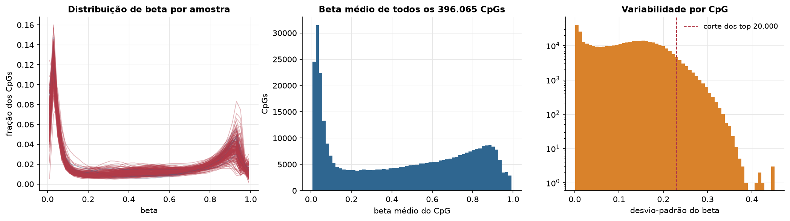
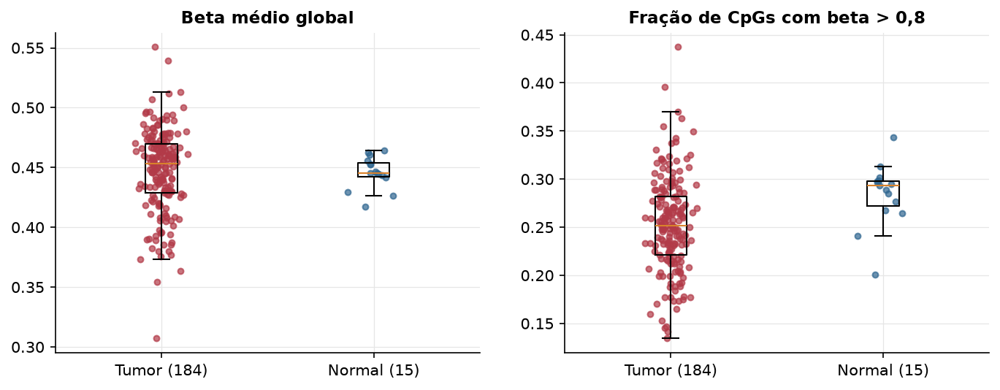
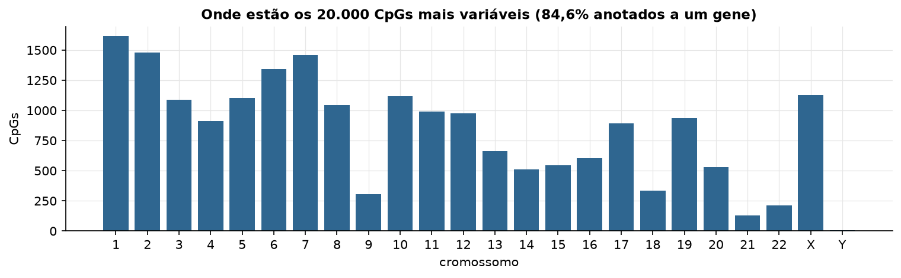
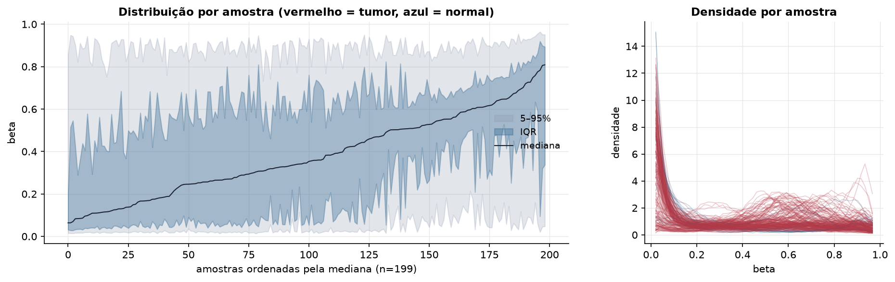
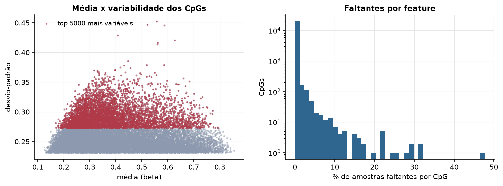
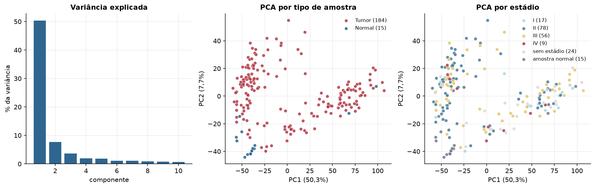
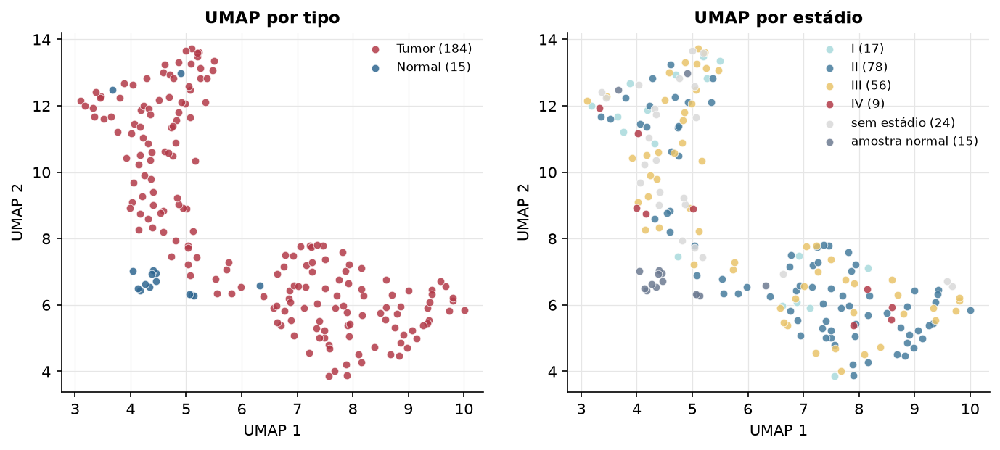
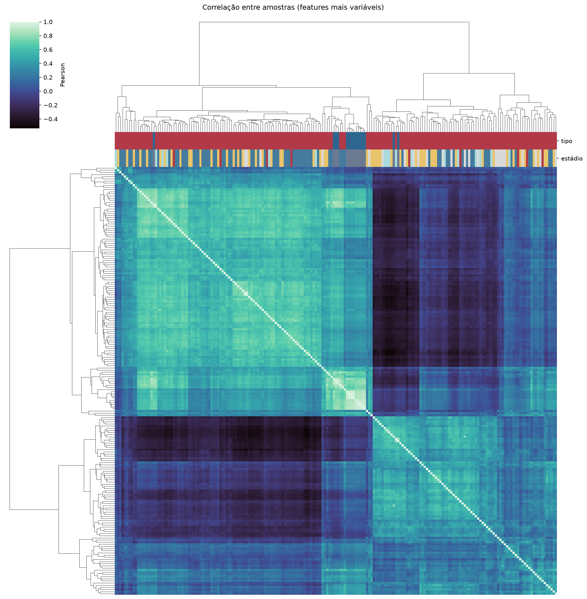
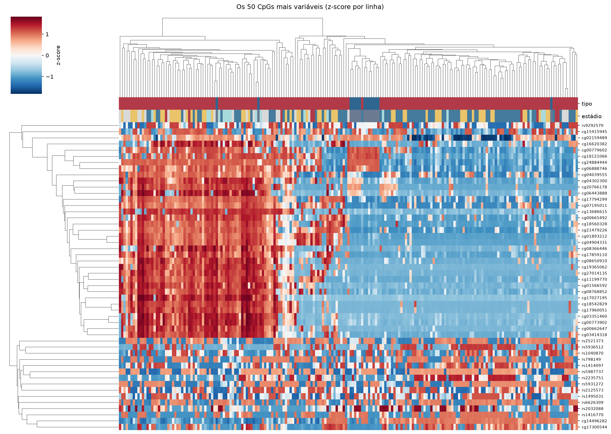
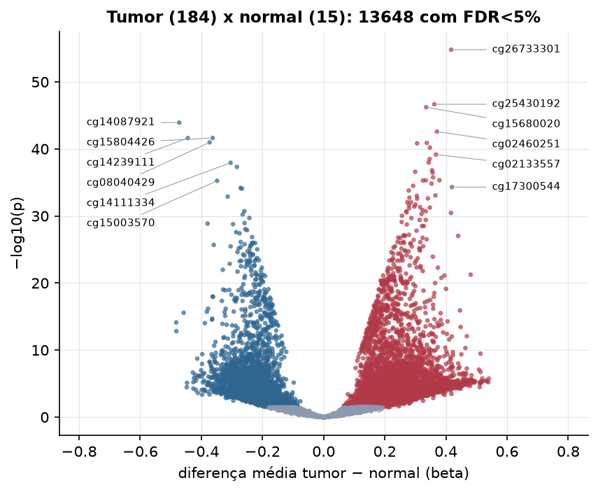

ESCA · Metilação do DNA (450k)
Illumina Infinium HumanMethylation450, valores beta (0 a 1) · gerado em 21/10/2026 21:16
396.065CpGs medidos
381.167CpGs sem faltante
20.000CpGs
184amostras tumorais
15amostras normais
0,1%valores faltantes
Fonte: PanCanAtlas HM450 via API do Xena
O array tem ~485 mil CpGs. Para não ocupar espaço, guardamos estatísticas de todos os CpGs e só os 20.000 mais variáveis para PCA, UMAP e heatmaps.
Principais resultados
- A distribuição de beta é bimodal: a maioria dos CpGs está quase toda desmetilada (perto de 0, típico de ilhas CpG em promotores) ou quase toda metilada (perto de 1, corpo gênico e regiões intergênicas). 46,5% dos CpGs têm beta médio intermediário (0,2 a 0,8).
- Beta médio global: 0,453 nos tumores e 0,445 nos normais (sem hipometilação global no tumor).
- 20.000 CpGs medidos em 199 amostras (184 tumorais e 15 normais); 0,1% dos valores estão faltando.
- Os dois primeiros componentes principais explicam 50,3% e 7,7% da variância das features mais variáveis.
- Correlação mediana entre amostras: 0,22.
- Tumor x normal: 13648 CpGs diferentes com FDR < 5% (10679 maiores no tumor, 2969 maiores no normal; 15 pacientes têm o par tumor-normal).
- Mais aumentados no tumor: cg26733301, cg25430192, cg15680020, cg02460251, cg07614018, cg09973284, cg01645295, cg02133557.
- Mais reduzidos no tumor: cg14087921, cg15804426, cg14239111, cg08040429, cg14111334, cg00012529, cg15003570, cg27301256.
- Associações clínicas com p < 0,05 nos componentes principais: PC1 com estádio (p=0.027); PC1 com idade (p=1e-05); PC2 com idade (p=0.01).
Distribuição global



Exploração dos CpGs mais variáveis
Distribuição dos valores


Estrutura das amostras




Tumor x normal

Features mais diferentes entre tumor e normal
| diferenca_tumor_menos_normal | t | p | fdr | |
|---|---|---|---|---|
| cg26733301 | 0.417 | 22.499 | 1.59e-55 | 3.17e-51 |
| cg25430192 | 0.362 | 19.533 | 2.19e-47 | 2.19e-43 |
| cg15680020 | 0.335 | 19.262 | 6.07e-47 | 4.05e-43 |
| cg14087921 | -0.472 | -18.402 | 1.17e-44 | 5.87e-41 |
| cg02460251 | 0.371 | 18.117 | 2.62e-43 | 1.05e-39 |
| cg15804426 | -0.363 | -17.879 | 2.35e-42 | 6.93e-39 |
| cg14239111 | -0.444 | -17.619 | 2.42e-42 | 6.93e-39 |
| cg08040429 | -0.373 | -17.512 | 1.06e-41 | 2.66e-38 |
| cg07614018 | 0.337 | 17.692 | 1.29e-41 | 2.87e-38 |
| cg09973284 | 0.306 | 17.359 | 1.47e-41 | 2.93e-38 |
| cg01645295 | 0.348 | 17.477 | 6.41e-41 | 1.17e-37 |
| cg02133557 | 0.367 | 17.435 | 7.01e-40 | 1.17e-36 |
| cg15552158 | 0.347 | 16.621 | 3.22e-39 | 4.95e-36 |
| cg17121747 | 0.343 | 16.448 | 1.09e-38 | 1.55e-35 |
| cg14111334 | -0.304 | -16.46 | 1.17e-38 | 1.56e-35 |
| cg00012529 | -0.284 | -16.191 | 4.79e-38 | 5.99e-35 |
| cg24453118 | 0.355 | 17.802 | 1.52e-37 | 1.79e-34 |
| cg22453113 | 0.299 | 16.009 | 2.61e-37 | 2.9e-34 |
| cg27282900 | 0.356 | 17.805 | 3.34e-37 | 3.52e-34 |
| cg13598010 | 0.358 | 16.498 | 1.7e-36 | 1.7e-33 |
| cg24804517 | 0.379 | 16.797 | 4.64e-36 | 4.38e-33 |
| cg08470742 | 0.334 | 15.605 | 4.81e-36 | 4.38e-33 |
| cg07879739 | 0.325 | 15.528 | 5.14e-36 | 4.47e-33 |
| cg15003570 | -0.349 | -15.792 | 5.72e-36 | 4.77e-33 |
| cg08548396 | 0.353 | 16.66 | 1.48e-35 | 1.19e-32 |
| cg17592360 | 0.293 | 15.714 | 3.17e-35 | 2.44e-32 |
| cg17300544 | 0.42 | 15.207 | 4.94e-35 | 3.66e-32 |
| cg27301256 | -0.272 | -15.212 | 6.6e-35 | 4.71e-32 |
| cg26714388 | -0.267 | -15.366 | 8.42e-35 | 5.81e-32 |
| cg22421859 | 0.278 | 15.117 | 1.62e-34 | 1.08e-31 |
Associação com variáveis clínicas
p-valores da associação dos três primeiros componentes principais (só tumores) com estádio (Kruskal-Wallis), sexo (Mann-Whitney), idade (Spearman) e sobrevida global (Cox univariado).
| estádio (Kruskal) | sexo (Mann-Whitney) | idade (Spearman) | sobrevida OS (Cox) | |
|---|---|---|---|---|
| PC1 (50,1%) | 0.027 | 0.882 | 1.01e-05 | 0.881 |
| PC2 (6,8%) | 0.163 | 0.19 | 0.01 | 0.222 |
| PC3 (3,1%) | 0.309 | 0.789 | 0.067 | 0.928 |